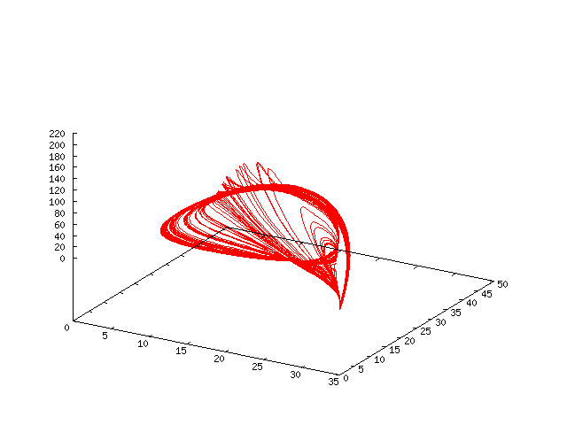
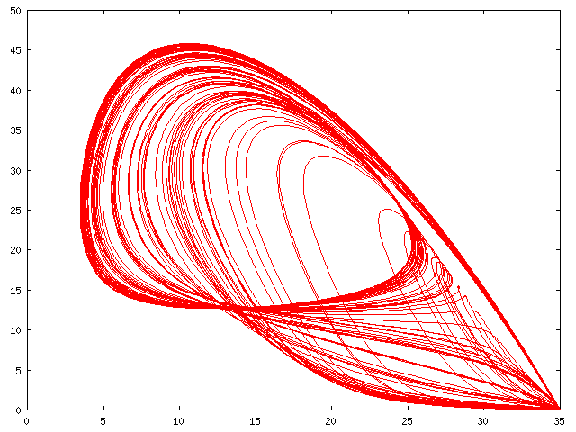
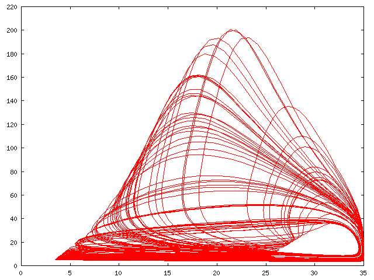
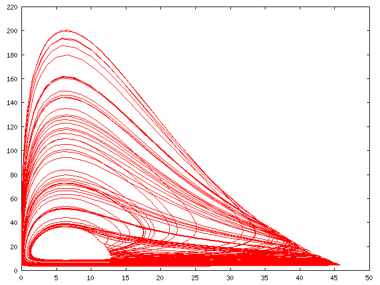
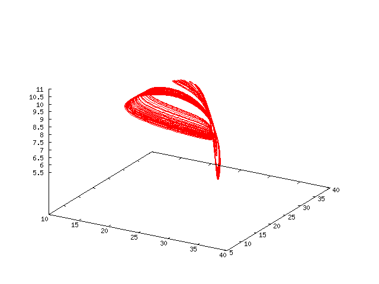
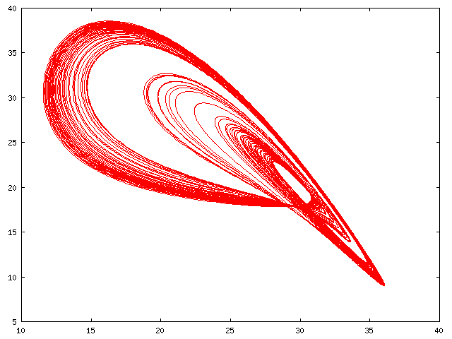
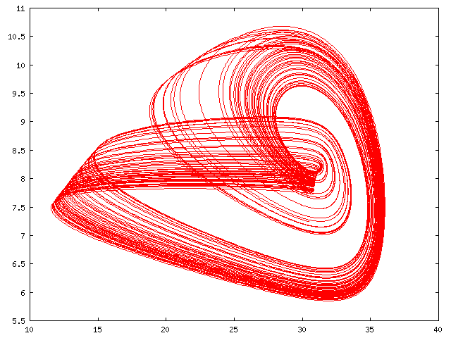
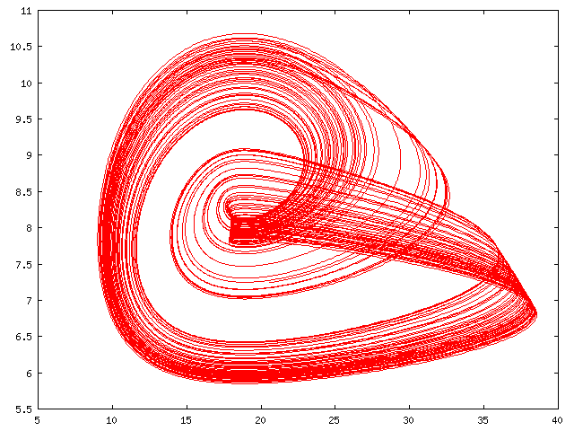

asap submitted (2001).
Preprint Le Havre Univ.

|
 xy-projection of strange chaotic attractor fond in the modified system (S1) |
 xz-projection |
 yz-rojection |

|
 xy-projection of strange chaotic attractor fond in the modified system (S2) |
 xz-projection |
 yz-rojection |
 Back to the previous page
Back to the previous page
Back to Aziz Alaoui's home page